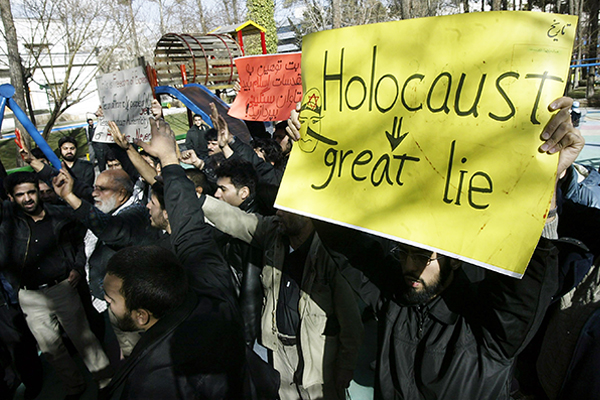
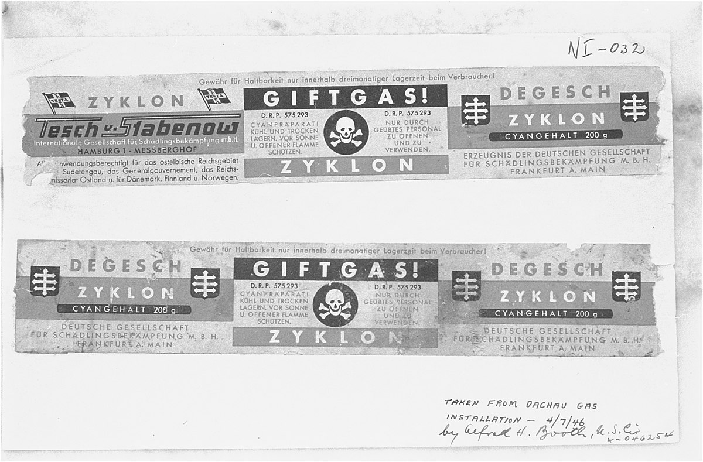

About a third of all Jewish
people alive at that time were murdered
in the Holocaust.
SOURCE
The Nazis believed they would rule for 1,000 years. They were actually in
control of Germany for 12.
SOURCE
Holocaust denial is either implicitly or explicitly a
crime
in 17 countries, including Germany and
Austria.
SOURCE

In Germany, there's a specific word for analyzing and
learning to live with the past, in particular the
Holocaust: Vergangenheitsbewaltigung.
SOURCE
More than 1 million Holocaust victims remain
unidentified.
SOURCE
The SS (Schutzstaffel, or Protection Squads) was Hitler's personal bodyguard
unit, which later became
the elite guard of the Nazi Reich and Hitler's force to carry out security duties without legal restraint.
SOURCE
The company that created Zyklon B, the gas that was used to
kill millions of Jews in the Holocaust, still exists as a
pest control company.
SOURCE

About 60 million Reichmarks, equivalent to
₱29,931,793,318.28
today, was
generated for the Nazi state by slave labour at Auschwitz
during the Holocaust.
SOURCE
Dachau, the first NAZI concentration camp in Germany, opened
six years before WWII.
SOURCE
Holocaust victims were subjected to forced labor under
inhumane conditions. Nazi doctors conducted
gruesome medical experiments on prisoners, often resulting
in severe suffering and death.
SOURCE
Elie Wiesel
- For the dead and the living, we must bear witness.